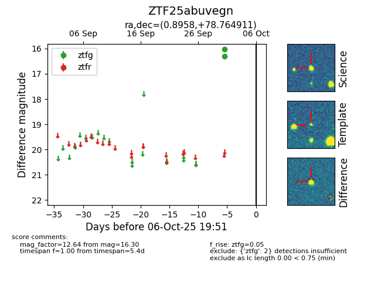

FINK: ZTF25abuvegn
Lasair: ZTF25abuvegn
ALeRCE: ZTF25abuvegn
ZTF25abuvegn (ztf,fink)
equatorial (ra, dec) = (0.8958,+78.76491)
galactic (l, b) = (120.5225,+16.11767)

last ztfg=16.30
2 ztfg detections